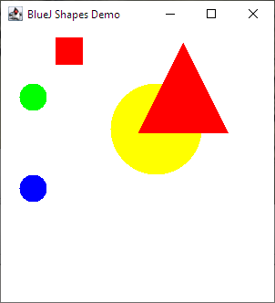
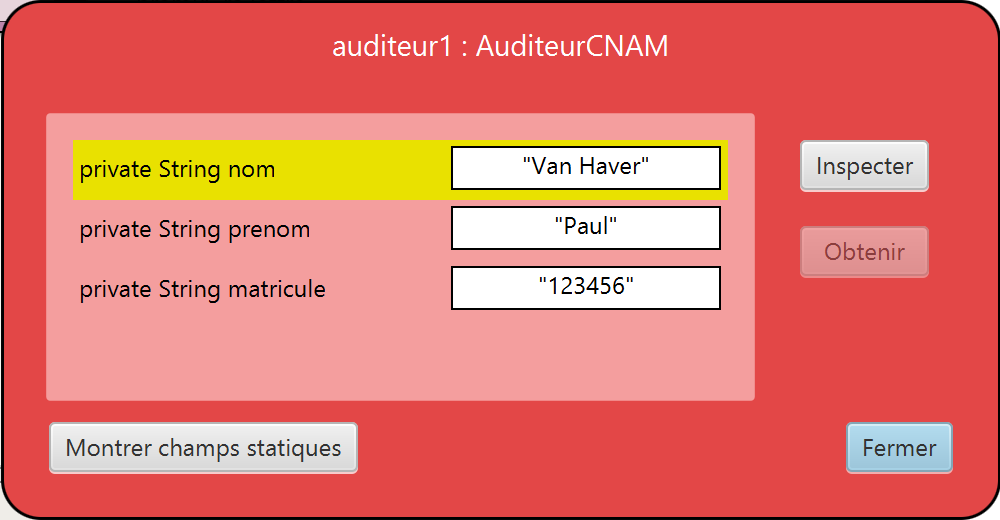

| Nom | Moro |
| Prénom | Alexandre |
| Matricule | 0g5drredxv9 |
Création des instances
Utilisation de la méthode makeVisible() pour les faire
apparaitre sur le canvas
moveDown() deux
fois? L'instance sur laquelle s'applique la méthode se déplace deux fois.
De la même manière, elle se déplace trois fois.
makeInvisible() deux
fois ?L'instance sur laquelle on applique deux fois la méthode makeInvisible()
reste invisible, le deuxième appel reste sans effet.
moveVertical, slowMoveVertical,
et changeSize. Trouvez comment utiliser moveHorizontal
pour bouger le cercle de 70 pixels sur la gauche.movevertical() et son champs d'entrée avec comme type
attendu un entier.
Pour déplacer l'instance de 70 pixels sur la gauche, il faut spécifier une valeur négative dans le champs (les valeurs positives déplacent l'instance à droite).
changeColor sur l'un de vos objets cercle
et entrez le type string "red". Cela devrait changer la couleur de votre
cercle. Essayez d'autres couleurs.La méthode changeColor(string newColor) prend une chaine
de caractère (string) en paramètre et modifie la couleur de l'instance
affichée sur le canvas.
Une couleur inconnue renvoie "black" par défaut.
La valeur renseignée est refusée et retourne une erreur
Error: cannot find symbol - variable value

Test des formes, de couleurs et des mouvements à l'aide des méthodes disponibles.
moveLeft) pendant que l'inspecteur est ouvert.Etat initial de l'inspecteur
Appel de la méthode moveLeft()
Etat de l'inspecteur après manipulation, la variable privée int xPosition à été décrémentée de 20 pixels.
Pour réaliser cette illustration, il a fallu créer les instances, renseigner les propriétés et gérer les positions manuellement. C'est long et fastidieux
Pour rendre ce processus efficace il serait préférable de créer une
méthode (par ex: createHouse() qui encapsule toutes ces
opérations et les réalisent à l'appel de celle-ci.
draw(). Par ailleurs, essayez les
méthode setBlackandWhite() et setColor().Résultat de la méthode draw()
Résultat de la méthode setBlackandWhite()
Retour aux couleurs de base avec la méthode setColor()
La classe Picture possède une méthode draw() qui contient
le code d'instanciation des objets nécessaires, paramètre les couleurs
et invoque successivement les déplacements nécessaires à la composition
de l'image.
draw() qui
contient le code d'instanciation des objets nécessaires, paramètre les
couleurs et invoque successivement les déplacements nécessaires à la
composition de l'image.public void draw() { wall = new Square(); wall.moveVertical(80); wall.changeSize(100); wall.makeVisible(); window = new Square(); window.changeColor("black"); window.moveHorizontal(20); window.moveVertical(100); window.makeVisible(); roof = new Triangle(); roof.changeSize(50, 140); roof.moveHorizontal(60); roof.moveVertical(70); roof.makeVisible(); sun = new Circle(); //sun.changeColor("yellow"); sun.changeColor("blue"); sun.moveHorizontal(180); sun.moveVertical(-10); sun.changeSize(60); sun.makeVisible(); }
private Square wall; private Square window; private Triangle roof; private Circle sun;
Vous aurez besoin de rajouter cette ligne:
private Circle sun2;
Puis écrire le code approprié pour la création du second soleil.
sun2 = new Circle(); sun2.changeColor("blue"); sun2.moveHorizontal(120); sun2.moveVertical(-15); sun2.changeSize(30); sun2.makeVisible();
slowMoveVertical()
que vous pouvez utiliser pour le faire.On rajoute une nouvelle méthode sunset() afin d'invoquer
le coucher de soleil sur sun.
public void sunset() { sun.slowMoveVertical(300); }
Voir 1.15
Autres exemplegetName()
pour chaque objet. Explique ce qui se passe.Pour le moment la méthode ne renvoi rien.
/** * Lecture du nom de l'auditeur. * * @return son nom */ public String nom() { return null;// à compléter }
public String nom() { return this.nom; }
Ce qui renverra
int
et string. Java a plusieurs autres types prédéfinis.
Trouvez lesquels, ce qu'ils sont et ce pourquoi ils sont utilisés. | byte | Entier trés court |
| short | Entier court |
| int | Entier |
| long | Entier long |
| float | Flottant |
| double | Flottant double |
| boolean | Booléen |
Principaux type présents dans Java
Source : https://web.maths.unsw.edu.au/~lafaye/CCM/java/javatype.htm
| 0 | int |
| "hello" | String |
| 101 | int |
| -1 | int |
| true | booléen |
| "33" | String |
| 3.1415 | float / double |
name, a un objet cercle ?Il faudrait pour cela définir une nouvelle variable d'instance et
écrire les mutateurs associés si celle-ci était déclarée private.
public class Circle { //... private String nom; public void setNom(String nom){ this.nom = nom; } public String getNom(){ return this.nom; } ...// }
send
dont un de ces paramètres est de type String et ne
retourne pas de valeur.public void send(String exercice){ }
int et retournant une valeur
de type int.public int average(int param1, int param2){ }
Ce livre peut être vu comme une instance (objet) d'une classe livre qui pourrait contenir diverses méthodes et données d'instance comme :
Un objet ne peut se construire que depuis une seule classe (qui définit son type), mais celle-ci peut hériter d'une classe supérieure. cette notion d'héritage rend donc l'objet dépendant de plusieurs classes.
Par ailleurs en Java, tout objet hérite par défaut de la classe Object
donc tous les objets autre que Object héritent de
plusieurs classes.
Le point le plus complexe de cette partie est la méthode login()
Mon principal soucis fut de remplacer les caractères accentuées par leur équivalent sans accent.
Utiliser la méthode replaceAll() avec une règle pour
chaque caractère accentué semblait une tache laborieuse et je l'avoue,
j'étais un poil trop feignant pour les faire (sans compter qu'il était
fort probable que j'en oublie).
Une recherche Google m'a renvoyé vers une page StackOverflow
recommandant l'utilisation de la classe Normalizer .
Le règles sur nom et prenom ayant plusieurs similarités, j'ai regoupé
certains traitements dans une méthode privée CommonLoginRules()
les regroupants :
private static String CommonLoginRules(String input) { return Normalizer .normalize(input, c) .replaceAll("[^\\p{ASCII}]", "") .toLowerCase() .replaceAll("[\\s \\W]", "_"); }
Normalizer impose au préalable d'importer le module java.text.Normalizer
ce qui se fait en déclarant en entête de fichier : import
java.text.Normalizer;
https://docs.oracle.com/javase/tutorial/i18n/text/normalizerapi.html
.toLowerCase() va forcer la casse d'un
caractère si celui-ci est en majusculereplaceAll() présente deux fois dans ce
chainage va nous permettre de faire concorder une expression régulière
(regex) avec un caractère de remplacement. Je ne suis vraiment pas habitué aux
regex donc il m'a fallu y aller de façon un peu empirique avec l'aide
bienvenue de sites d'aide à leur détermination comme :
https://regexr.com/
et diverses documentations trouvées
via des recherches google, notamment :
https://docs.oracle.com/javase/7/docs/api/java/util/regex/Pattern.html
"[\\s \\W]" passée en paramètre de la fonction
replaceAll() va capturer tous les espace \\S
et tous les caractères "non mot" \\W , pour les
remplacer par le caractère '_'. Ensuite, dans l'appel de cette
méthode pour les données d'instance, je passe en paramètre la donnée
voulue avec une méthode substring().
Permettant ainsi de limiter le
nombre de caractères max pour nom et prenom, avec une évaluation au niveau
des paramètres à l'aide la
méthode min() de la
classe Math (renverra la plus petite des valeurs, soit this.nom.length()ou
le String en entier).
public String login() { String loginNom = CommonLoginRules(this.nom.substring(0, Math.min(this.nom.length(), 6))); String loginPrenom = CommonLoginRules(this.prenom.substring(0, Math.min(this.nom.length(), 1))); return loginNom + "_" + loginPrenom; }

L'ajout de test personnalisés se passent de la même manière qu'énoncé en Webconférence, un clic sur la méthode de tests fournis donne accès au menu suivant:
On peut alors créer une instance et appeler la méthode voulue:
et par la suite renseigner le
résultat attendu et terminer l'enregistrement.
Reste ensuite a exécuter les test
avec nos méthodes personnalisées et celles demandés en question 5:
Tout semble bon pour la première phase de tests.
Une grande partie des tests ont
réussis sur les tests en ligne, seul les tests personnalisés demandés ne
sont pas détectés.
Je n'ai pas réussi à trouver le
pourquoi de cet échec, malgré une méthode testant un booléen comme demandé
dans les commentaires du code de l'exercice.
public void testBool() { question3.AuditeurCNAM auditeur3 = new question3.AuditeurCNAM("bool", "Boulot", "123456"); assertEquals(true, auditeur3.equals(auditeur3)); }